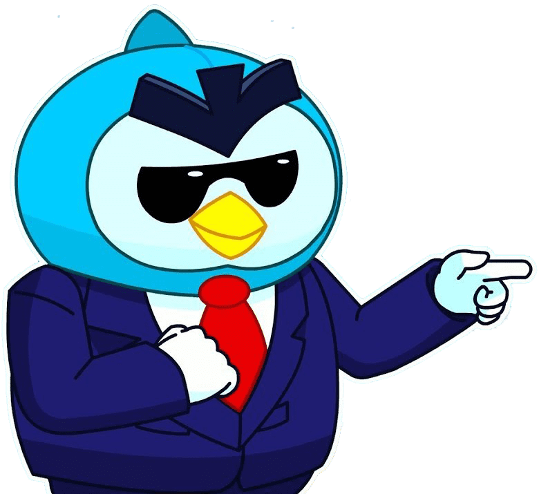

Парень по имени мистер Пи мечтал стать бравлером еще с тех
времен, когда арена не имела большой известности. Человек не
обладал ни физическими качествами, ни особыми способностями.
Проработав 5 лет адвокатом, мистер Пи пресытился однообразным и
скучным занятием. Он понимал, что жизнь на арене будет наполнена
событиями и позволит заработать больше денег, а также даст
возможность заявить о себе всему миру. Разговоры о своих
намерениях со знакомыми вызывали только смех.
Решающим моментом для Мистера Пи стала стычка с хулиганами,
которые издевались над пожилым человеком. Адвокат без раздумий
вступился за старика и ударил одного из противников. Остальные
сумели с ним совладать и переломали защитнику все конечности,
после чего сбежали.
После получения ранений адвокат узнал, кто скрывается под
маской немощного старика. Пожилой человек, которого спас
адвокат, оказался волшебником — он почувствовал желание Pe и
вылечил его, восстановив все кости, после чего превратил в
пингвина. Арена «Бравл Старс» повидала множество
человекоподобных бойцов, поэтому организаторам нужно было
что-то новое.
В качестве инструмента пингвин получил чемодан, наполненный
магической силой.Мистер Пи в новом облике отправился на арену,
чтобы поговорить с организаторами. Те удивились его внешнему
виду и попросили продемонстрировать способности. Пингвин в
пробном матче использовал в качестве снаряда свой чемодан, а в
виде поддержки — станцию, которая порождает дронов,
самостоятельно атакующих противника. После увиденного комиссия
с радостью приняла нового бравлера и присвоила ему высший статус.